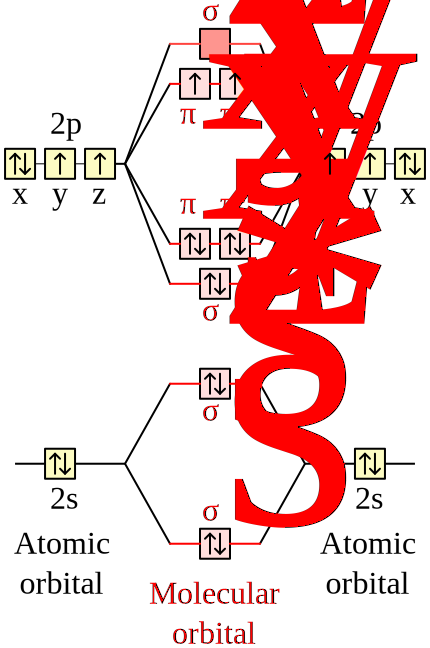
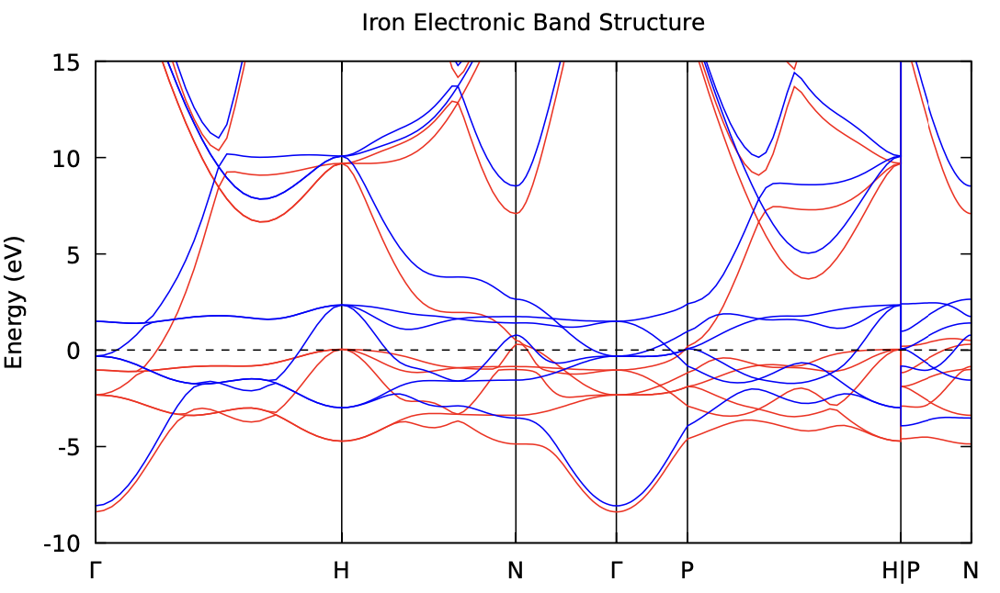

This week we'll cover two topics: metallic systems and spin. For metals,
there are a couple of complications which mean we have to treat them
differently from systems with a non-zero band gap.
Metals
Metals have a Fermi surface that can be quite complex in k-space. This means
that in contrast to an insulator or semiconductor where every k-point has the
same number of occupied states, in a metal the number of occupied states can
vary from k-point to k-point. This makes them more difficult to converge than
other systems.
In short, there are generally two things you need to do:
Use a denser k-point grid than you would need for a semiconductor or
insulator. This is to help sampling the rapid change in the Fermi surface at
different k-points.
Use some smearing scheme. This is in relation to the smearing used in the
calculation of the density of
states. The difference is that here
the occupation is also smeared (i.e., can no longer be intergers of 0 and
1.) Visually, the smeared DOS would look like the following:
where the occupation function (Fermi-Dirac function) is plotted in red. The
Fermi energy is obtaeind by solving the following equaion:
$$
\int_{-\infty}^{\varepsilon_F} \mathrm{DOS}(\varepsilon) f_T(\varepsilon)
d\varepsilon = N_e
$$
where \(N_e\) is the number of electrons in the system and \(f\) represents the
Fermi-Dirac distribution function at temperature \(T\). As we already know,
the Fermi-Dirac function at 0K is a step function which would spoil the
convergence of metals. Here, we simply raise the temperature to a small
number (degauss) so that the Fermi-Dirac function is smeared out and the
Convergence can be more easily achieved. It is worth noting that other
smearing methods such as gaussian smearing can also be used.
Adding a smearing helps significantly in achieving a smooth
SCF convergence, as otherwise a small change in a state energy from once
cycle to the next could lead to a very large change in its occupation and to
the total energy in turn (this is called 'ill-conditioning').
We set the smearing scheme and width with the occupations and degauss
variables in the input file.
Example: Aluminium
Aluminium forms in a standard fcc structure with one atom per cell, which we
know how to deal with at this point. The thing about Aluminium that makes it
more complicated within DFT is that it is a metal.
Here is an example input file for a calculation of Aluminium:
The occupations variable is set to smearing to tell Quantum Espresso
to use a smearing scheme input
description.
The smearing variable is set to fermi-dirac to tell Quantum Espresso
to use a Fermi-Dirac smearing scheme. input
description.
The degauss variable is set to 0.1d0 to set the width of the smearing.
see input
description.
Task 1 - Smearing
First, run the pw.x calculation with the supplied input file in
01_aluminium/Al.in.
Then, look in the pwscf.xml file and find the various ks_energies
entries towards the end. These give the various k-points used in the
calculation and the energies and occupations of each state for this k-point.
Note, for a metal the default number of bands is at least four more than are
needed for the number of electrons per cell. The pseudopotential we have
used has 3 valence electrons, which could be represented with two
potentially doubly occupied bands, so we have four more bands in the
calculation for a total of 6.
Now, try removing the occupations and degauss variables from the input
file and see what happens when you try to run the calculation.
Example
1234
%%%%%%%%%%%%%%%%%%%%%%%%%%%%%%%%%%%%%%%%%%%%%%%%%%%%%%%%%%%%%%%%%%%%%%%%%%%%%%
Error in routine electrons (1):
charge is wrong: smearing is needed
%%%%%%%%%%%%%%%%%%%%%%%%%%%%%%%%%%%%%%%%%%%%%%%%%%%%%%%%%%%%%%%%%%%%%%%%%%%%%%
Spin Polarization
Up till now we have been assuming that we always had some set of bands which
could each fit two identical electrons. Essentially we have been ignoring
the electron spin. If you want to examine, for example, a magnetic system
then the spin of the electrons is important. It can also be important
in modelling atomic or molecular systems. We'll cover different examples
of this in this lab.
The Oxygen Molecule
If a system is not necessarily magnetic we might imagine that representing
it with some set of fully occupied, doubly degenerate bands will work. However,
in some cases including spin polarization can lead to important differences. One
example of this is the O2 molecule.

In this case, we have a system with two interacting oxygen atoms. Each oxygen
has 8 electrons in total, with the configuration 1s2 2s2 2p4 (the 1s orbital
will be contained within the pseudopotential for the DFT calculations done
here, so you will have 6 electrons from each oxygen atom).
For a single oxygen, from Hund's rule the three p orbitals should be filled
singly before being filled in pairs, so that one of the p-orbitals will have two
electrons, and the other two should have one each. However, if we assume doubly
occupied orbitals, we'll have the two p-orbitals with two electrons and one that
is empty. This means a calculation where we assume a set of doubly occupied
bands will have trouble converging to the ground state of the system. For the
molecule the situation is similar, but the s and p orbitals from each atom
combine to form bonding and anti-bonding \(\sigma\) and \(\pi\) orbitals.
The directory 02_O2 contains an input file to calculate the total energy of
the system at the measured bond length. Here the calculation has been set up
exactly as you've seen in the past (i.e., assuming doubly degenerate band
occupation without smearing or spin polarization:
Try running the calculation in this directory. Does it converge?
Answer
While it's possible that the system may randomly meet the convergence
criteria in the self-consistent cycle, this calculation will most likely
not converge. If you look at the estimate accuracy at the end of each
iteration in the output, it will likely vary from step to step, rather than
steadily decreasing as in a well-behaved calculation.
The situation we have is similar to a metal: we have two bands and the ground
state of the system should be when there is one electron in each of them.
To get around this, we can use a metallic occupation scheme with a small
smearing width. This will allow the system to converge to the correct ground
state. The relevant input variables are the ones highlighed below:
Create a copy of the 02_O2 directory called 02_O2_metal. Modify the
input file in it to use a metallic occupation scheme with a small smearing
width and run the calculation (as above).
Does the calculation now converge?
Answer
Yes, the calculation should now converge.
Take a look at the file pwscf.xml in the calculation directory, and
try to find the occupations of each band at each k-point. Are these as
expected?
Answer
The occupations should be fractional for the highest occupied valence
band which is not physical for a molecule.
While treating this system as a metal may help converging the calculation, it
may not necessarily reach the ground state since the spin-degress of freedom is
constrained. Instead, we can do a spin polarized calculation by adding nspin
and tot_magnetization variables to the input file (highlighted below):
nspin: this is 1 by default so no spin polarization is taken into
account. To perform a spin polarized calculation it should be set to 2.
tot_magnetization: this is difference between the number of spin-up and
spin-down electrons in the cell. If we want a single spin up electron
we can set this to 1.0.
Task 2.3 - Assuming Spin Polarized Metal
Create another copy of 02_O2 called 02_O2_spin. Then, try to:
Only turn on spin polarization. Does the calculation run?
Answer
The calculation will not run.
1234
%%%%%%%%%%%%%%%%%%%%%%%%%%%%%%%%%%%%%%%%%%%%%%%%%%%%%%%%%%%%%%%%%%%%%%%%%%%%%%
Error in routine iosys (1):
fixed occupations and lsda need tot_magnetization
%%%%%%%%%%%%%%%%%%%%%%%%%%%%%%%%%%%%%%%%%%%%%%%%%%%%%%%%%%%%%%%%%%%%%%%%%%%%%%
Setting the total magnetization to 0, which would be the case if we
don't have any net magnetization in the molecule, as both spins point in
opposite directions.
Answer
The calculation converges to an energy of -63.25520699 Ry.
Setting the total magnetization to 2.0, which corresponds
to both spins pointing in the same direction. Is the energy lower? How do
the orbital energies vary?
Answer
The calculation converges to an energy of -63.29338911 Ry. The
energy becomes lower with this configuration and the orbital
energies become different between spin channels.
Finally, comparing the energy of the spin polarized calculation with the spin
degnerate metal calculation, we can see that the spin polarized calculation
gives a lower energy.
Fun facts
O2 in its singlet state can be dangerous (see e.g.
this paper),
so treating the spin correctly is important!
Iron
Now that you've seen how including spin polarization can allow us a correctly
describe the ground state of our system in your calculation, the next step
is to use it to describe a magnetic system.
In a magnetic system there is a net spin polarization in the unit cell. This
means that we'll probably have an odd number of electrons, and the energy of
the system when we include a net spin polarization is lower than the energy
when we don't.
One of the most common magnetic systems is iron, so we'll examine this. The
directory 03_Fe contains an input file for iron. Note this is a BCC structure
(as set by ibrav = 3 in the input file), whereas most of the crystals
structures you have examined previously were FCC. The calculation has been set
up in the usual way for a metallic system.
Task 3.1 - fixed magnetization
Run this calculation and check everything worked as expected. What is the
final energy?
Answer
The final energy should be -55.52528610 Ry.
Now make a copy of the calculation directory and in this, modify the
calculation to turn on spin polarization. Try running the calculation
with tot_magnetization = 0.0 first, and compare your total energy to that
obtained using doubly degenerate bands.
Note
while in the case of the O2 above, we were able to get our
calculations to at least converge by using a metallic occupation
instead of using spin polarization, in the case of iron, it will still
be a metal when you use spin polarization, so you should not remove
the input variables associated with this.
Answer
The total energy becomes -55.52528589 Ry. Almost identical to the
one obtained with the doubly degenerate bands. This is because these
two calculations are essentially identical.
Now try setting the total magnetization to 1.0 and see how total energy
changes: Which is the more energetically favourable configuration?
Answer
The total energy becomes -55.53839616 Ry. Lower than the spin
degenerate case.
Try setting the total magnetization to 2.0. How does the final energy
compare to the previous value?
Answer
The total energy becomes -55.56226730 Ry. Lower than all previous
cases.
From this we could test many guesses for the total magnetization, and find
the value which gives the lowest overall total energy. However, we can instead
pass an option that tells quantum espresso to automatically find the best
value. This is done by setting the starting_magnetization input variable.
Task 3.2 - Relaxed magnetization
Make another copy of the 03_Fe directory, and this time set nspin = 2,
and starting_magnetization = 1.0 (do not include the
tot_magnetization variable as this fixes a value). Run the calculation
and see what the final total magnetization per cell is. See if you can
find a measured value for iron to compare to.
Answer
The total magnetization becomes larger than 2.0.
1
total magnetization = 2.21 Bohr mag/cell
This is becuase we are allowing the spin to fully relax in the
system.
See if you can use what we covered in previous labs to calculate and make a
plot of the electronic band structure of BCC Fe.
Plot the spin-up and spin-down bands in different colours.
Indicate the Fermi energy on your plot in some sensible way.
As the Brillouin zone is different to the ones you have calculated so
far you'll need to select a few sensible high-symmetry points yourself
to plot with .
Answer
You can find the relevant input file in the directory
03_Fe/extra_bandstructure. Give the run_all.sh file a read and
try to run the calculation. The band structure should look like The
following:

Summary
In this lab you have seen:
How to treat a metallic system.
How to do a DFT calculation including spin polarization.
How some systems need to be done with spin polarization to converge to the
correct ground state.
How to use spin polarized calculations to find the correct magnetization of a
magnetic system by letting the code find the total magnetization that produces
the lowest overall total energy.
 density of
states. The difference is that here
the occupation is also smeared (i.e., can no longer be intergers of 0 and
1.) Visually, the smeared DOS would look like the following:
density of
states. The difference is that here
the occupation is also smeared (i.e., can no longer be intergers of 0 and
1.) Visually, the smeared DOS would look like the following: .
.